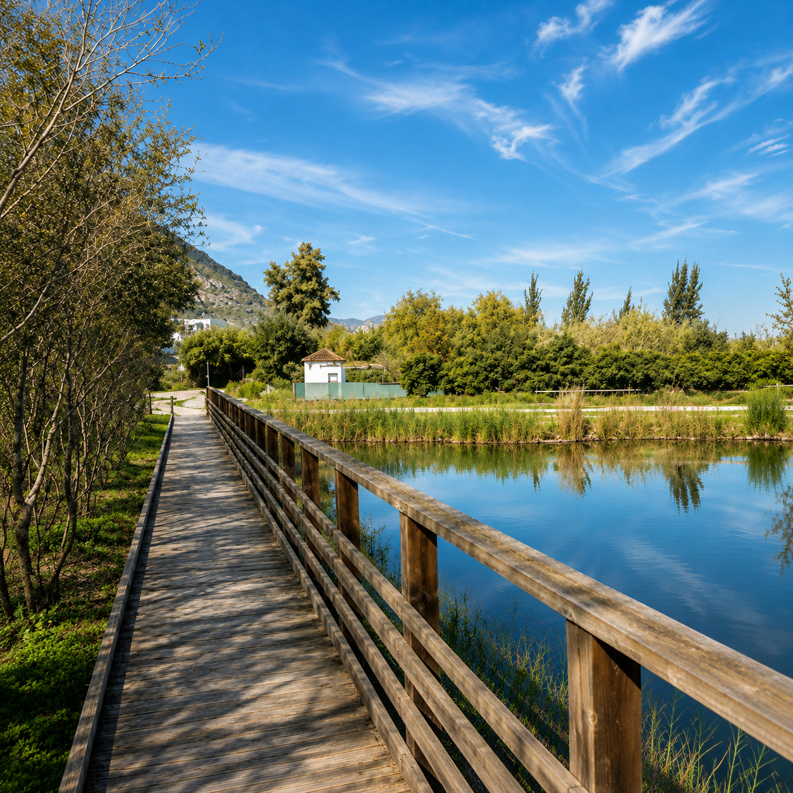
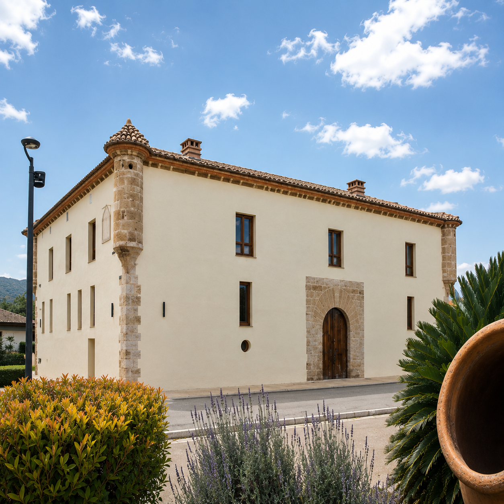
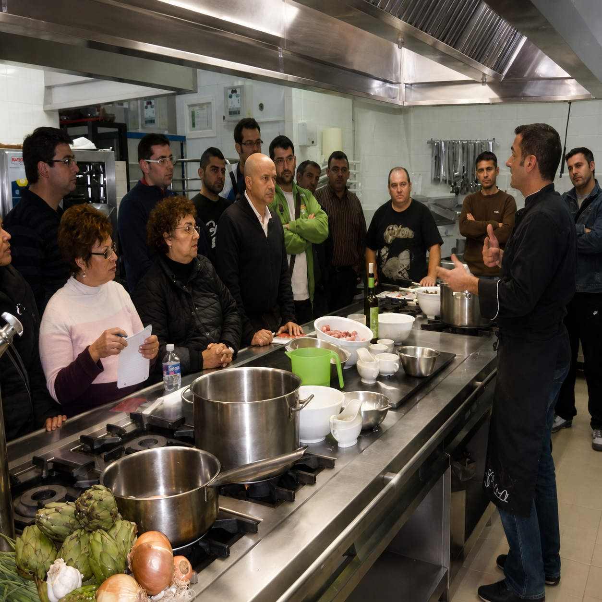
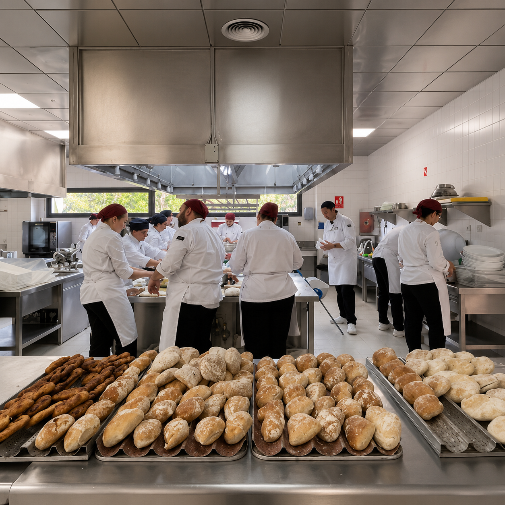
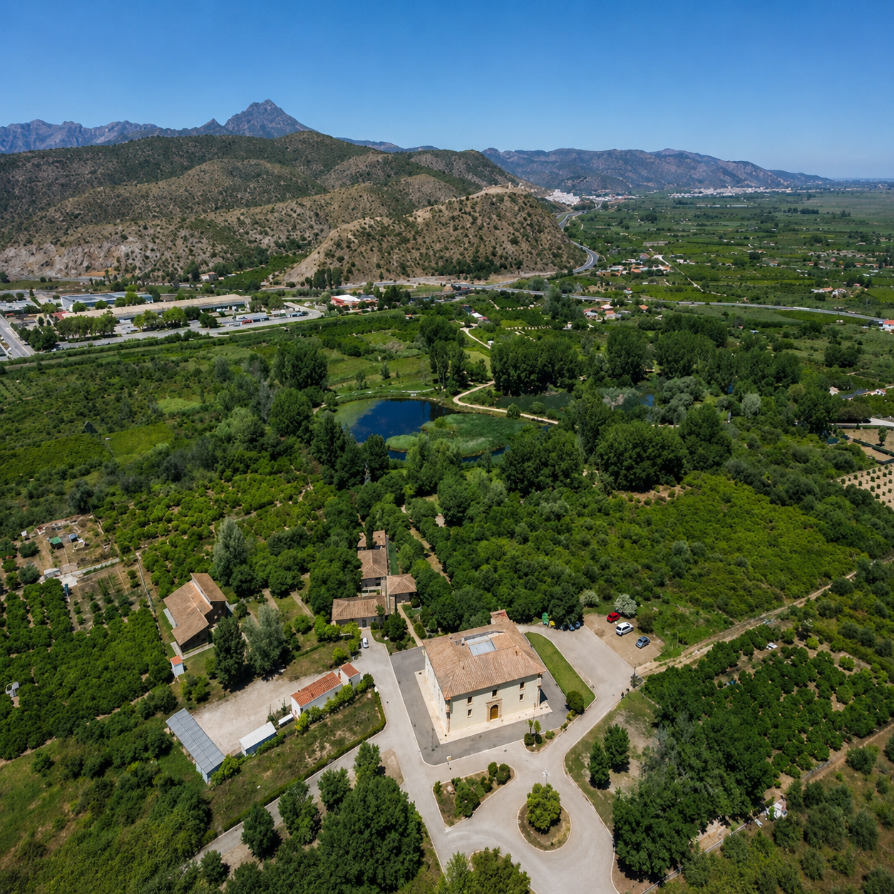

Instalaciones del CdT Gandía
El Centro de Turismo (CdT) Gandía cuenta con unas instalaciones modernas y completamente equipadas, diseñadas para ofrecer una formación práctica y de alta calidad en el ámbito de la hostelería y el turismo.
Ubicado en el histórico entorno de l’Alqueria del Duc, un edificio de origen medieval rehabilitado, el centro combina tradición y modernidad en un espacio único rodeado de naturaleza. Este enclave singular, situado junto a zonas húmedas y marjales, proporciona un entorno ideal para el aprendizaje y la creatividad.
Espacios formativos
El centro dispone de diversas aulas adaptadas a diferentes áreas de formación:
- Aulas teóricas equipadas con recursos audiovisuales.
- Aula de informática para formación digital aplicada al turismo.
- Aula de demostración para clases prácticas y showcookings.
Instalaciones gastronómicas
Uno de los puntos fuertes del CdT Gandía son sus espacios dedicados a la cocina y restauración:
- Cocinas profesionales completamente equipadas con tecnología de alto nivel.
- Restaurante pedagógico donde el alumnado realiza prácticas reales.
- Cafetería formativa orientada al servicio al cliente.
- Bodega para formación en enología y maridaje.
Zonas comunes
- Amplio vestíbulo central que conecta todas las áreas del centro.
- Espacios de descanso y convivencia para el alumnado.
- Entorno natural que favorece un ambiente tranquilo y profesional.
Innovación y entorno
El CdT Gandía apuesta por la innovación en la enseñanza, integrando espacios preparados para el aprendizaje práctico y el contacto directo con el sector profesional. Su ubicación y diseño permiten combinar la formación técnica con la inspiración gastronómica y cultural del entorno.
En conjunto, las instalaciones del CdT Gandía lo convierten en un centro de referencia en la formación turística dentro de la Comunidad Valenciana, ofreciendo a los estudiantes una experiencia educativa completa y orientada al mundo laboral.




